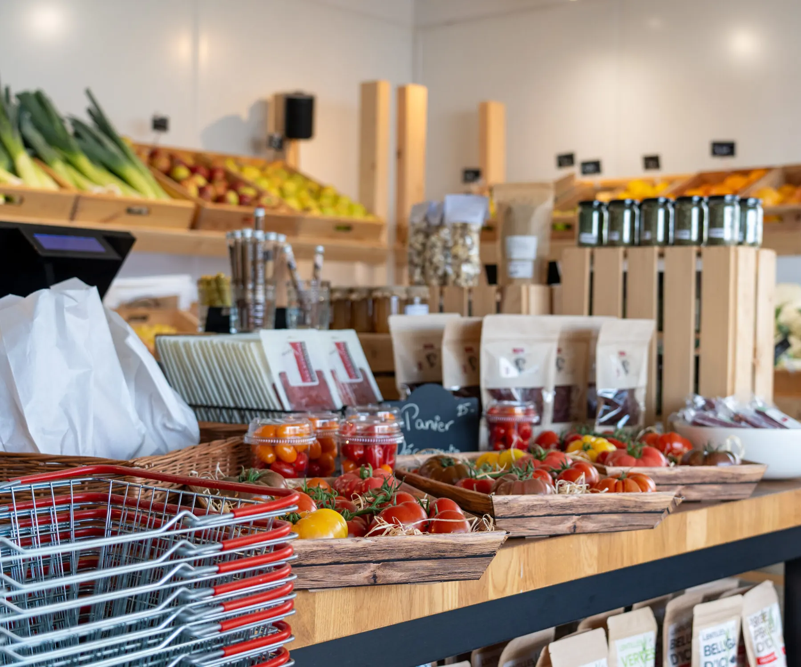
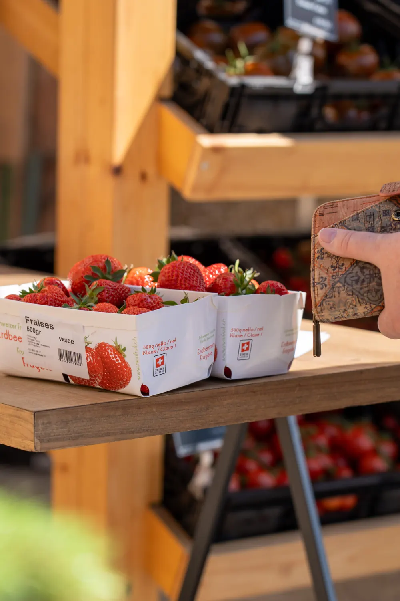
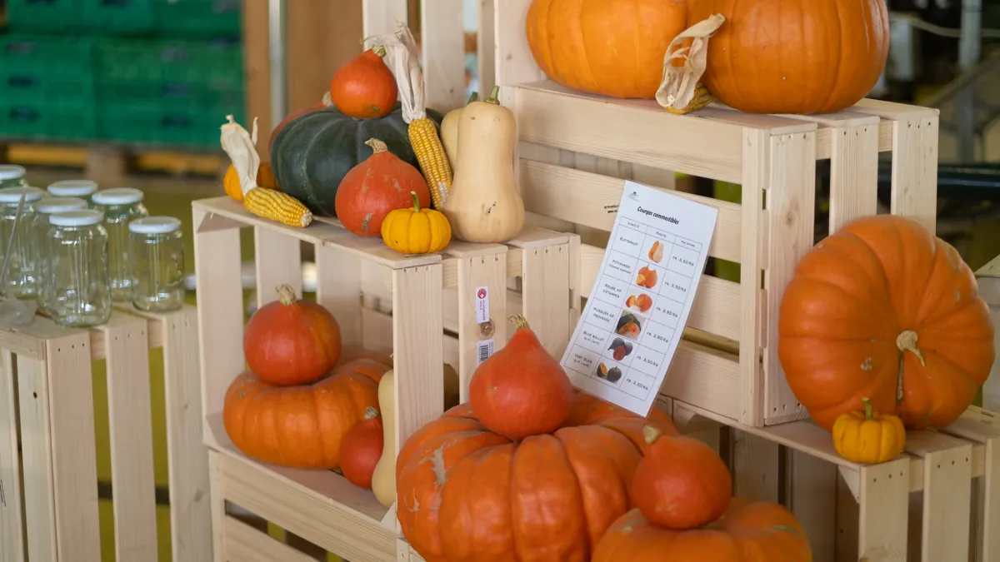
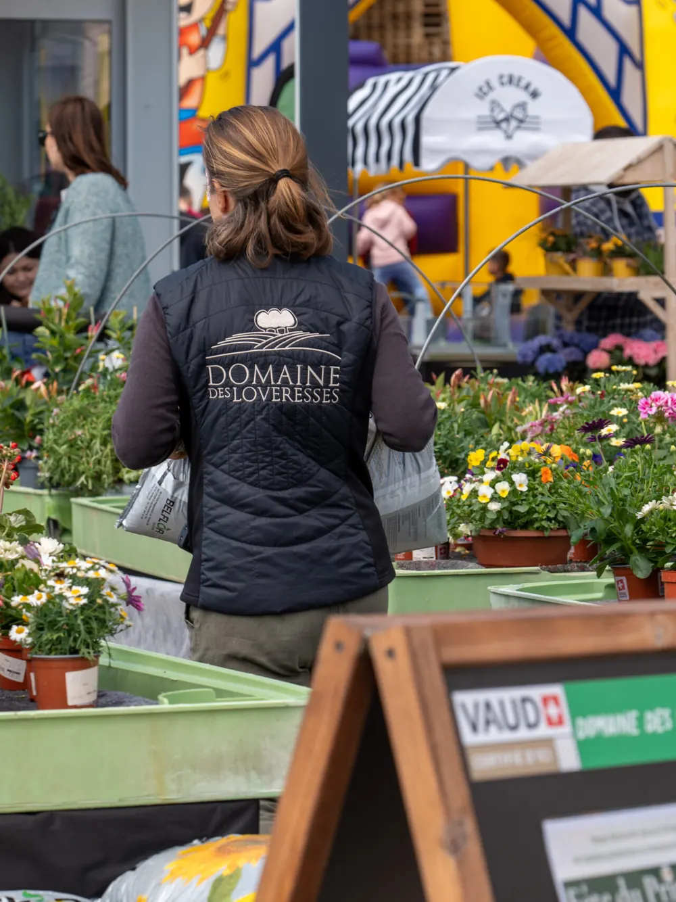
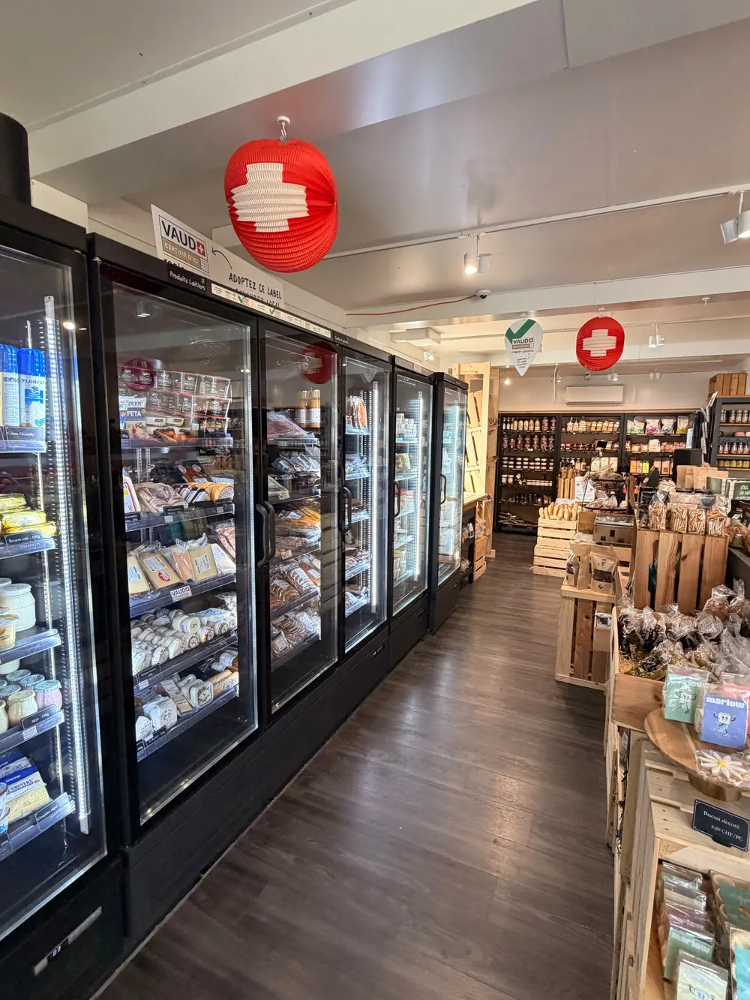
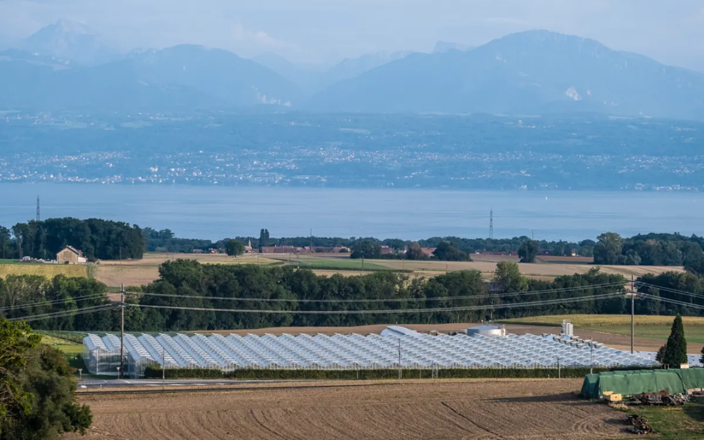
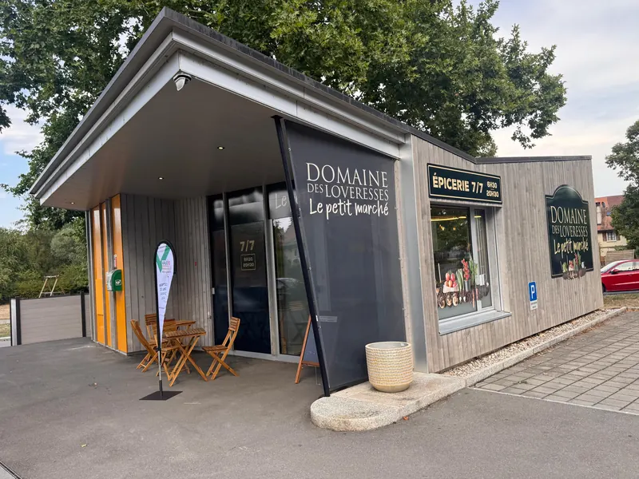
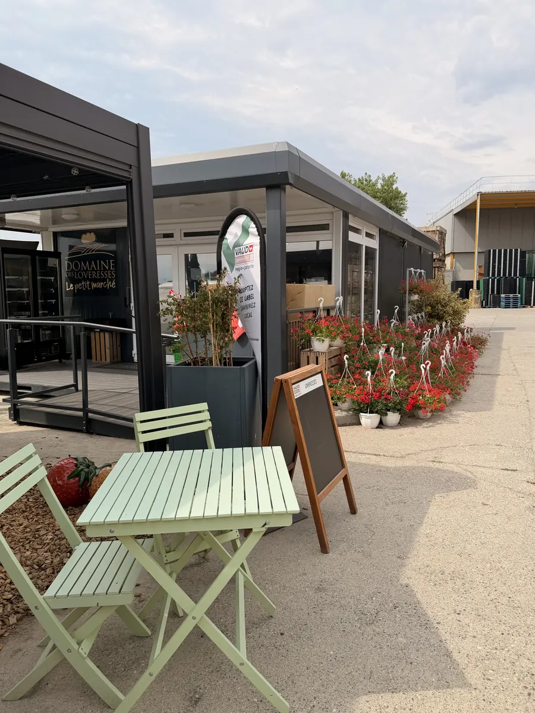

Les récoltes du Domaine
Cueillis à maturité à Yens, nos fruits et légumes font le trajet le plus court de leur vie : du champ au rayon, souvent le jour même.
Épicerie de village · La Chaux & Yens
Des légumes d'à côté, des fruits cueillis à maturité, et une sélection de bons produits dénichés chez des artisans d'ici.
Ouvert 7j/7 · 6h30 – 20h30Route de Cuarnens 2, 1308 La Chaux

Tous les jours, dimanche compris
En journée, notre équipe est là pour vous conseiller ou vous accueillir. Tôt le matin et en fin de journée, le magasin passe en libre-service : on se sert, on scanne, on règle, on file.
Pour le pain de 6h30 comme pour le souper improvisé de 20h.
Paiement à la borne par carte, TWINT ou en espèces.
Le Petit Marché, c'est l'épicerie imaginée par le Domaine des Loveresses. On y trouve les fruits et légumes de l'exploitation, et tout ce qu'il faut autour. De quoi remplir le panier du quotidien, pas seulement le compléter.
Cueillis à maturité à Yens, nos fruits et légumes font le trajet le plus court de leur vie : du champ au rayon, souvent le jour même.
On goûte, on compare, on discute, et seuls les produits qui mettent tout le monde d'accord gagnent leur place.
Le Domaine des Loveresses plante ses premières cultures à Yens en 1968. Aujourd'hui, c'est la deuxième génération de la famille Cornu qui fait tourner l'exploitation.

Nos produits
Le Petit Marché est pensé pour de vraies courses, pas juste un dépannage. Des producteurs et artisans de la région en priorité, et le meilleur d'ailleurs quand il le mérite.
Tomates, endives, fraises, framboises : cultivés à Yens.
Mozzarella, tommes et vacherin, chèvre et brebis, yogourt et beurre.
Fromagerie André, Romanel-sur-Morges · Ferme des Jordils, St-Saphorin-sur-Morges · Fromagerie du Haut-Jorat, Peney-le-JoratLe pain frais dès 6h30, des flûtes au beurre, des pâtes.
Flûtes de Montrichier, La Sarraz · GalliPâtes, Cheseaux-Noréaz · Moulin d'EchallensViandes et plats cuisinés de boucheries de la région, poisson frais, œufs.
Boucherie Perusset, Orbe · La ferme en Croix, Vuillerens · Pêcherie Loni, TolochenazMoutarde, huile et vinaigre, confitures, biscuits, café en grain.
Moulin de Severy · Confiture Delphine, Puidoux · Grain Noir, La SarrazPlats cuisinés, snacking, produits ménagers.
« Rien n'entre en rayon sans avoir été goûté et approuvé par le Domaine. »

Au fil des saisons
L'assortiment suit le calendrier de la nature, pas celui du marketing.
Le libre-service
Au Domaine à Yens ou à La Chaux (Cossonay). Tous ouverts 7 jours sur 7, de 6h30 à 20h30.
Récoltes du Domaine, produits frais, épicerie, plats cuisinés. Besoin d'un avis ? En journée, l'équipe est là pour ça.
Aux heures de présence de l'équipe, on s'occupe de vous. Le reste du temps, je scanne mes produits sur la borne.
Des courses fraîches, locales et de saison, faites en quelques minutes, à deux pas de la maison.



Les rayons changent au fil des récoltes et l'accueil ne change jamais. 7 jours sur 7, de 6h30 à 20h30.

Cossonay

Aussi au Domaine
Route de l'Etraz 1, 1169 Yens · 7j/7, 6h30 – 20h30
Itinéraire vers Yens →